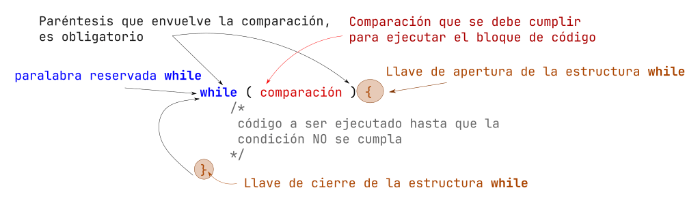

Introducción a ciclos (while)
Si deseas conocer la teoría básica de ciclos, ve a la documentación de algoritmos en la sección de ciclos
Estructura del ciclo while
El primer ciclo que vamos a conocer se llama while (mientras). Este ciclo, primero verifica una comparación y en caso que se cierta o de como resultado true, entrara al bloque de código que esta entre las llaves, una vez termina la ultima linea; es decir, antes de la llave de cierre, vuelve a la comparación inicial y evalúa la comparación, en caso que sea true repite el ciclo, de lo contrario termina y continua la ejecución del programa.

while(comparacion_a_true){ //inicia bloque while
// bloque de código que se repite
// hasta que la companion no se cumpla
} //termina bloque while
Ejemplos
- Imprimir 5 veces la palabra "Hola"
#include <stdio.h>
int main(void){
char* mensaje = "Hola";
int contador = 0;
while (contador < 5){
printf("%s\n", mensaje);
contador = contador + 1;
}
return 0;
}
- Imprimir del 0 al 5
#include <stdio.h>
int main(void){
int contador = 0;
while (contador <= 5){
printf("%d\n", contador);
contador = contador + 1;
}
return 0;
}
- Hacer una calculadora de 2 números, que tenga la opción de sumar, restar y salir, si da una opción que no esta, volver a mostrar el menu inicial y da un mensaje "No existe la opción", el usuario solo podrá salir si elije la opción de salir. Cada que termina de hacer la operación de sumar o restar, volver a mostrar el menú, hasta que elija salir de la aplicación.
#include <stdio.h>
int main(){
int opt = 0;
while (opt != 3){
printf("Calculadora \n");
printf("1) Suma \n");
printf("2) Resta \n");
printf("3)Salir \n");
scanf("%d", &opt);
if (opt == 1){
printf("==== SUMA ====\n");
float a = 0.0;
float b = 0.0;
printf("Dar el primer numero: ");
scanf("%f", &a);
printf("Dar el primer numero: ");
scanf("%f", &b);
printf("La suma es %f\n", a + b);
}
else if (opt == 2){
printf("==== RESTA ====\n");
float a = 0.0;
float b = 0.0;
printf("Dar el primer numero: ");
scanf("%f", &a);
printf("Dar el primer numero: ");
scanf("%f", &b);
printf("La resta es %f\n", a - b);
}else if (opt == 3){
printf("Saliendo\n");
}else{
printf("Error!!! Opcion no existe!!!\n");
}
}
return 0;
}
- Imprimir la tabla de multiplicar del 15, del 1 al 10
#include <stdio.h>
int main(void){
const int TABLA = 15;
int count = 1;
while (count <= 10){
printf("%d x %d = %d\n", TABLA, i, (TABLA * i));
count++;
}
return 0;
}
- Obtener el promedio de una materia, solicitando cada parcial (3) (CON UN CICLO), al final imprime el promedio
#include <stdio.h>
int main(){
int n = 0;
float suma = 0.0;
while(n < 3){
float calificacion =0;
printf("Dar la calificacion %d: ", n+1);
scanf("%f", &calificacion);
suma += calificacion;
n++;
}
float total = suma / 3;
printf("El promedio es: %.2f\n", total);
return 0;
}
Juego: Adivina el numero
#include <stdio.h>
#include <stdlib.h>
#include <time.h>
int main() {
int maximo = 20;
int contadorFalla =0;
int fallaMaxima = 3;
srand( time(NULL));
int numeroRandom = rand() % (maximo + 1);
printf("BIENVENIDO AL PARAISO\n");
printf("----> %d\n", numeroRandom);
printf("Descubre el numero oculto >:)\n");
while(1){
int numeroUsuario = 0;
printf("Dame un numero de entre 0 al %d: ", maximo);
scanf("%d", &numeroUsuario);
if(numeroRandom == numeroUsuario){
printf("Es correcto, haz ganado!!!!!!\n");
break;
}else if(numeroRandom > numeroUsuario){
printf("El numero es mayor!!!!!!\n");
}else{
printf("El numero es menor!!!!!!\n");
}
contadorFalla++;
if(contadorFalla == fallaMaxima){
printf("GAME OVER!!! You're a looser >:) ");
break;
}
}
return 0;
}
Ejercicios (while)
- Imprimir del 1 al 10
- Realizar una calculadora aritmética básica, es decir, que tenga suma, resta, multiplicación y division; todas estas opciones en el menú. También agregar la opción de salir. Cuando el usuario elija alguna operación, se le solicitaran los datos que se necesitan, al entregar el resultado, vuelve a mostrar el menu. El programa termina hasta que el usuario elije la opción de salir. Si da una opción que no existe, dar el mensaje "Opción no existente" y vuelve a mostrar el menu.
- Imprimir la tabla de multiplicar que el usuario elija, del 1 al 10; es decir, si el usuario desea la tabla del 8, debe salir por pantalla 8x1=8, 8x2=16, ...
- Calcular el promedio final, solicita al usuario sus calificaciones parciales una a una, y al final da el mensaje "Aprobado", en caso que haya pasado arriba de 6 y "Estas en repite" si es menor.
- Promedio de 3 parciales (con un ciclo), y si saco entre 0 a menor que 6, indicar que no paso, y se va a recursamiento, si saco entre 6 a 10, indicar que paso. Si da un calificación que no existe, indicar que no existe
- Realizar una calculadora de resistencia serie, el usuario ira introduciendo los valores uno a uno, la solicitud es infinita, hasta que le usuario decide cuando terminar, la opción de salir es -1, después de terminar imprime el resultado
- Realizar una calculadora de resistencia serie y paralelo, el usuario cual elije la opción, el usuario ira introduciendo los valores uno a uno, la solicitud es infinita, hasta que le usuario decide cuando terminar, la opción de salir es -1. después de terminar imprime el resultado